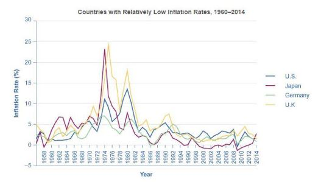

Question 1
Refer to the graph below, which shows the inflation rates for four countries (U.S., Japan, Germany, and U.K.) from 1960 to 2014.
Question 2
Question 3
Question 4
Question 5
1. Which country experienced the highest peak in inflation rate during the period shown?
2. In which decade did most of the countries shown experience a significant spike in inflation rates?
3. Which of the following countries had the most stable inflation rate after 1985?
4. What was the approximate inflation rate for Germany around the year 1980?
5. During which period did Japan's inflation rate drop below 0%, indicating deflation?